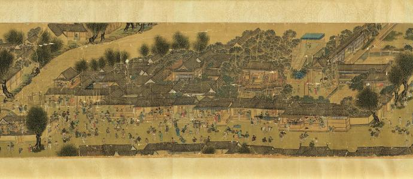
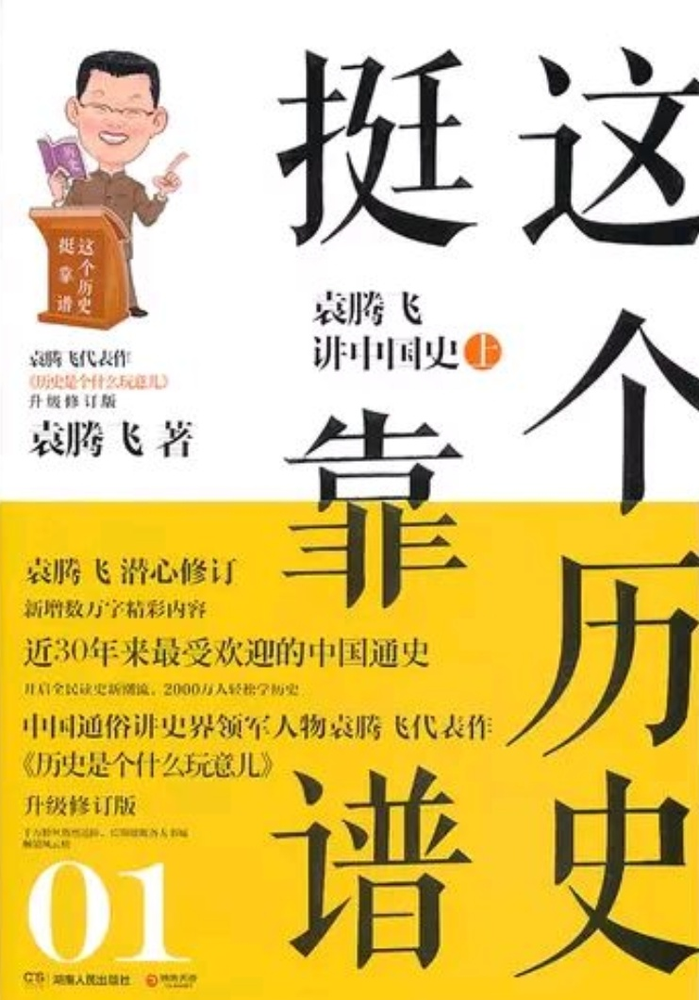

作者：
袁腾飞
出版社：
湖南人民出版社
副标题：
袁腾飞讲历史（全三册）
出版年：
2013/7/1
页数：
870
装帧：
平装
国际标准书号ISBN：
9787543894440
相关作品：
《袁腾飞讲汉末三国》
《袁腾飞讲塞北三朝》
《战争就是这么回事》
内容简介 · · · · · ·
❖ 《这个历史挺靠谱：袁腾飞讲历史》是《历史是个什么玩意儿》系列的升级珍藏版。 在《历史是个什么玩意儿》的基础上，袁腾飞对全文进行了潜心修订，精心打磨，去芜存精，新增数万字精彩内容。 书本内有国内顶级插画师精心绘制60幅精美插画；国际流行大开本，双色印刷；超值附赠11小时袁腾飞讲课视频精华光盘。
作者简介 · · · · · ·
❖ 袁腾飞：中国通俗讲史界领军人物，百万级畅销书作家，引领一代讲史新风。
❖ 17岁开始发表作品；20岁出版首本书；30岁前得遍台湾所有文学大奖；35岁入山修行后写成 的“身心安顿系列”；成为20世纪90年代台湾畅销的作品；40岁完成“菩提系列”，畅销数百万册，是当代具影响力的作品之一； 52岁完成《林泉》、《清欢》、《玄想》，被选为台湾中学生优秀读物。
❖ 善于以幽默犀利、灵活多变的语言风格，讲述海量的历史知识。其独特的讲史风格，赢得了千万粉丝的 热烈追捧，被广大读者朋友昵称为“袁Sir”。著有畅销历史作品《这个历史挺靠谱》《战争就是这么回事儿》系列。
目录：
❖ 第一章 从远古走来的牛人们（先秦）
❖ 第二章 文治武功大一统（秦汉）
❖ 第三章 各领风骚数十年（三国、两晋、南北朝）
❖ 第四章 天命所归是大国（隋唐）
❖ 第五章 长江后浪推前浪（五代，辽、宋、夏、金、元）
❖ 第六章 大浪淘沙，沧桑巨变（明清）
丛书信息:
❖ 《这个历史挺靠谱：袁腾飞讲历史》是《历史是个什么玩意儿》系列的升级珍藏版。本系列开启全民读史 新潮流，自问世以来畅销至今，第一册为《这个历史挺靠谱：袁腾飞讲中国史.上》，第二册为《这个历史挺靠谱：袁腾飞讲中国史.下》， 第三册为《这个历史挺靠谱：袁腾飞讲世界史》。
去阅读
回首页